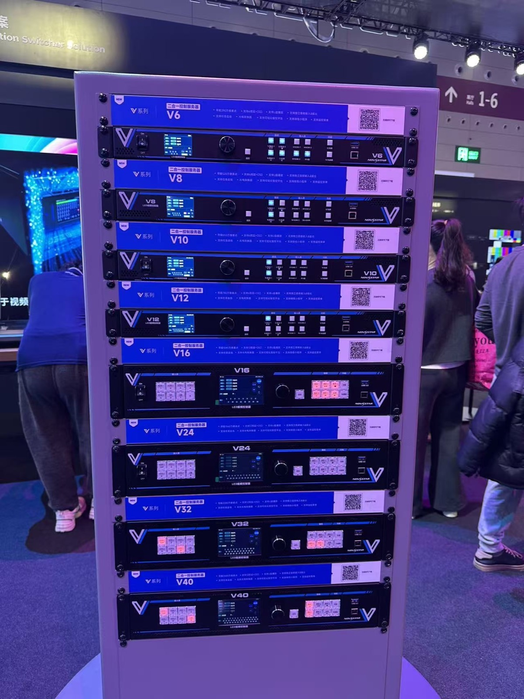
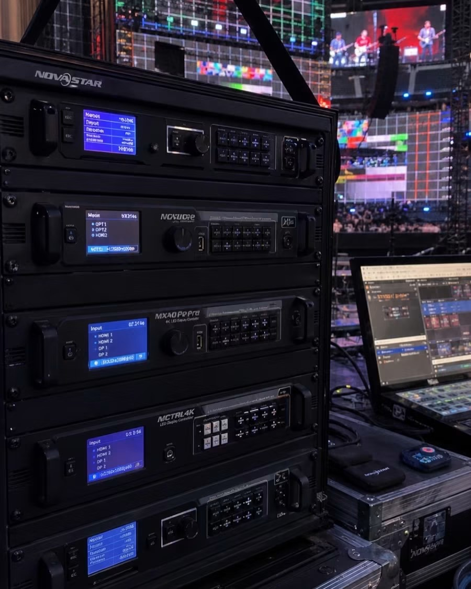
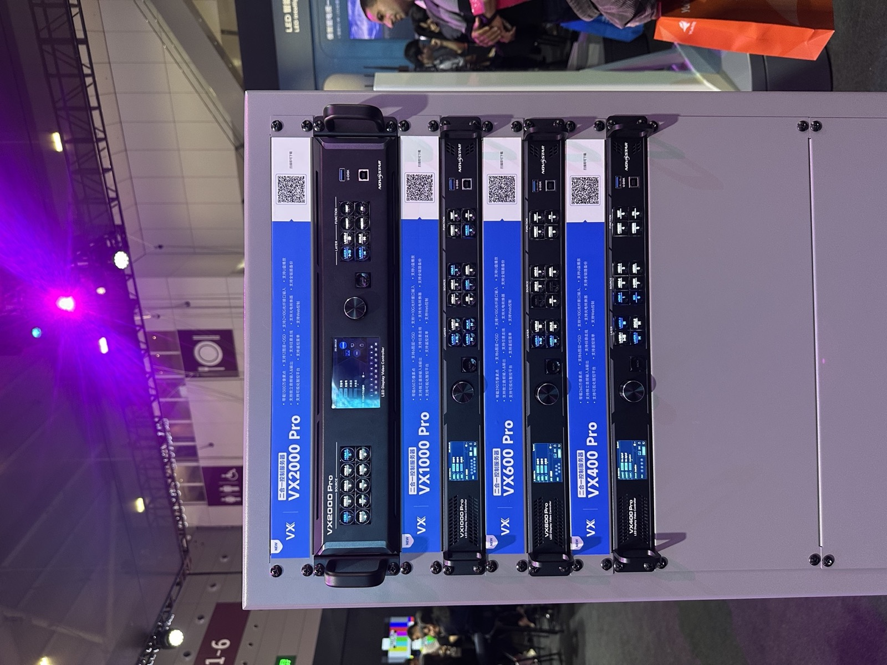

By David
What is an LED video wall processor? An LED video wall processor is the device that takes video sources, scales and arranges them, and sends the correct pixel data to every LED cabinet in a wall. It sits between your sources and the display and decides how many windows appear, how they scale, and how clean the image looks. This 2026 guide explains what buyers must check before they add a processor to an LED project.
Many LED projects fail not because of the screen but because of the processor. Buyers often treat the processor as an accessory and pick the cheapest box that fits the port count. Weeks later the wall cannot show enough sources, the scaling looks soft, or the system drops frames during a live event. The processor is the part that decides whether the wall behaves like a professional display or a large television.
This guide is written for project managers and buyers who are comparing quotes and need to specify a processor correctly. It covers the functions a processor performs, the bandwidth limits that decide your maximum resolution, and the questions that separate a reliable unit from a cheap one that fails under load.
A processor performs three core jobs. First, it accepts input sources such as HDMI, SDI, DisplayPort, and IP streams. Second, it scales and positions those sources into a canvas that matches the physical wall. Third, it splits the finished canvas into output signals that feed the LED sending cards or receiving cards behind the cabinets.
Some LED controllers combine the processor and the sending card in one chassis. Others separate them so the processor handles sources and the sending card handles transmission. Buyers should know which architecture they are buying, because it changes the cabling, the redundancy options, and the upgrade path.

Every output port on a processor carries a limited amount of pixel data. A single output may support a fixed number of LED cabinets or a maximum pixel count. The wall's total pixel count, not its physical size, determines how many outputs you need. This is the single most common specification error in LED buying.
| Wall Resolution | Approx. Pixels | Typical Outputs Needed |
|---|---|---|
| Full HD 1920x1080 | 2.07 million | 1-2 outputs |
| 4K UHD 3840x2160 | 8.29 million | 4-8 outputs depending on port bandwidth |
| 8K 7680x2160 | 16.6 million | 8-16 outputs with high-bandwidth ports |
| Custom 6000x2000 | 12 million | 6-10 outputs, confirm per-port limit |
Ask the supplier for the maximum pixels per output, not just the maximum wall size. Two processors with the same port count can differ by a factor of two in real capacity. If the number is not documented in the datasheet, treat it as unknown and request a written confirmation.
Good scaling keeps the image crisp when a source resolution does not match the wall resolution. Poor scaling adds softness, ringing, and motion blur. For control rooms and broadcast, scaling quality is visible every day and worth a higher budget. For simple signage that shows one full-screen source, scaling quality matters less.
Source management covers windows, layers, and picture-in-picture. A wall that must show a video plus a data feed plus a camera needs multiple windows and enough layers to composite them. Confirm the maximum number of windows and the maximum number of overlapping layers, and whether scaling is available on every window or only on the main picture.

Marketing sheets claim 4K and 8K support, but the real question is whether the full resolution is available at the frame rate you need. A processor may accept 4K60 input but process at a lower internal rate, or may support 4K on one window only. Bandwidth is shared across inputs, the processing canvas, and outputs, so the peak load is what matters.
For a 4K wall running live camera content, ask for the internal processing resolution, the frame rate at that resolution, and the color depth. A system that processes at 8-bit 4K30 behaves very differently from one that processes at 10-bit 4K60. The gap appears as banding in gradients and stutter in fast motion.
Latency is the delay between a source and the image on the wall. For pre-recorded signage, latency is invisible. For live cameras, interviews, and sports, even a few frames of delay break lip-sync and stage timing. Request the end-to-end latency figure in frames and test it with a real camera and a clock.
| Application | Latency Tolerance | What to Request |
|---|---|---|
| Signage and advertising | High (200ms+ fine) | Standard scaling processor |
| Corporate AV and meetings | Moderate (<100ms) | Low-latency mode confirmed |
| Live broadcast | Very low (<2 frames) | Frame-sync, genlock, low latency |
| XR and virtual production | Critical (<1 frame) | Genlock and camera sync support |
For critical walls, a single processor is a single point of failure. Redundancy options range from hot-swappable power supplies to dual processors with automatic failover. The right level depends on the cost of downtime. A retail wall can tolerate an hour offline; a control room or broadcast wall cannot tolerate a minute.

Buyers often confuse three devices. The processor handles sources and scaling. The sending card (or video controller) encodes the image and transmits it to the receiving cards in the cabinets. The player stores and plays content, often a small media box or a PC. A complete system may include all three, and the quote should state clearly which device does what.
If the project shows a single looping video, a player with a built-in sender may be enough and no separate processor is needed. If the project shows multiple live sources, a processor is essential. Match the device list to the actual content plan before comparing prices.
Match the processor to the wall by working from pixels outward. Calculate the wall's native resolution, divide by the processor's pixels-per-output limit, and round up. Then add headroom for future content and for the operating system and window borders, which consume a small amount of canvas. A wall specified at exactly the limit will feel tight on day one.
For a wall that will grow, choose a processor with spare ports and spare processing capacity. Expanding a wall later is far cheaper than replacing a processor that has no room. Buyers who plan one phase of growth usually avoid a second purchase within two years.

The most common mistake is buying on port count instead of pixel capacity. A buyer counts the HDMI ports, assumes they are enough, and later discovers that each output supports far fewer pixels than the wall needs. The number of ports is a weak signal; the pixels per output is the number that decides the installation.
A second mistake is ignoring the processing canvas. Windows, picture-in-picture, and source scaling all consume canvas area, so a wall specified at exactly the processor's limit feels cramped once real content runs. A third mistake is skipping the software question: some processors are configured by a simple menu, while others require trained operators to manage windows and presets.
Finally, many buyers forget spare capacity for the sender and receiver cards. The processor can be perfect, but if a single receiving card fails and no spare is on site, the wall develops a dark rectangle until a replacement arrives from overseas. Budget the spares as part of the processor package rather than as an afterthought.
Write the processor requirement as measurable items in the purchase specification. List the input types and counts, the number and size of windows, the maximum wall resolution, the frame rate and color depth, the latency limit, and the redundancy level. Add the acceptance test method so the factory knows how the unit will be judged.
Ask for the firmware version and the update policy. Processors with active firmware support receive fixes for source compatibility and new codec support. A processor whose vendor has stopped updating firmware can become incompatible with new sources within a year, which is a hidden cost that never appears on the quote.
A processor is only as good as its documentation and support. Require a wiring diagram, an input-output mapping table, and a commissioning checklist with every unit. These documents turn a fragile installation into a system any technician can maintain.
For this requirement our range covers it directly: the X Series (front/rear service, common parts across platforms) and the series overview for spare-part lists.
Send us your wall resolution and source list, and we will specify the processor and outputs your project needs.
Request Processor SpecChat on WhatsApp